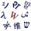

咖喱
在数学和计算机科学中，柯里化是一种将采用多个参数的函数转换为均采用单个参数的函数序列的技术。例如，函数 接受三个参数会创建三个函数：
或更抽象地讲，该函数需要两个参数，一个来自 还有一个来自 ，并在 通过currying被翻译成一个函数，该函数从 并从中产生输出函数 至 固化与部分应用有关，但不相同。
在实践和理论设置中，固化都是有用的。在函数式编程语言和许多其他语言中，它提供了一种自动管理如何将参数传递给函数和异常的方法。在理论计算机科学中，它提供了一种在仅提供一个参数的简单理论模型中研究具有多个参数的函数的方法。严格的“ curry”和“ uncurring”概念的最一般的设置是在封闭的Monoidal类别中，这支撑了证明和程序的Curry-Howard对应与与许多其他结构（包括量子力学，cobordisms和弦论）的对应关系的广泛概括。[1] 由弗雷格，[2] [3]由开发摩西·施菲克尔，[3] [4] [5] [6] ，并进一步通过开发Haskell的咖喱。[7] [8]
Uncurrying是双变换到钻营，并且可以被看作是一种形式的去官能化。它需要一个功能 其返回值是另一个函数 ，并产生一个新函数 这两个参数都作为参数 和 ，并因此返回 然后， ，那些争论。该过程可以迭代。
动机[编辑]
Currying提供了一种使用带有多个参数的函数的方法，并在其中函数可能仅带有一个参数的框架中使用它们。例如，一些分析技术只能应用于功能与一个参数。实用功能经常比这更多的争论。Frege展示了为单参数情况提供解决方案就足够了，因为可以将具有多个参数的函数转换为单参数函数链。现在，这种转换就是称为currying的过程。[9]数学分析或计算机编程中通常会遇到的所有“普通”功能可以咖喱。但是，在某些类别中，无法进行货币兑换；允许进行泛滥的最一般的类别是封闭的单形类别。
一些编程语言几乎总是使用咖喱函数来实现多个参数。值得注意的例子是ML和Haskell，在这两种情况下，所有函数都只有一个自变量。此属性继承自lambda演算，其中多参数函数通常以咖喱形式表示。
固化与部分应用程序有关，但与部分应用程序不相同。在实践中，闭包的编程技术可以通过将参数隐藏在随curried函数传播的环境中而用于执行部分应用程序和某种类型的curring。
插图[编辑]
假设我们有一个函数 这需要两个实数（）参数并输出实数，它由 。咖喱将其转化为功能 它接受单个实参并从中输出函数 至 。在符号中 ， 在哪里 表示所有具有单个实参并产生实际输出的函数的集合。对于每个实数，定义功能 经过 ，然后定义函数 经过 。例如 是发送其实参的函数 到输出 ， 或者 。我们看到一般
这样原来的功能 和它的烦人 传达完全相同的信息。在这种情况下，我们也写
这也适用于具有两个以上参数的函数。如果 是三个论点的函数 ，它的烦人 会拥有财产
历史[编辑]
由克里斯托弗·斯特拉奇（Christopher Strachey）在1967年创造的“ currying” （引文）是对逻辑学家Haskell Curry的引用。已提议使用其他名称“Schönfinkelisation”作为对MosesSchönfinkel的引用。[10] 在数学上，该原理可以追溯到1893年由弗雷格（Frege）提出。
定义[编辑]
从非正式定义开始最容易理解咖喱，然后可以将其塑造成适合许多不同领域的方法。首先，需要建立一些符号。记法表示所有功能从 至 。如果 是这样的功能，我们写 。让表示的元素的有序对 和 分别，即，笛卡尔乘积的 和 。这里， 和 可能是集合，也可能是类型，或者可能是其他种类的对象，如下所述。
给定功能
- ，
currying构造了一个新函数
- 。
那是， 接受一个论点 并返回一个映射的函数 至 。它的定义是
为了 从 和 从 。然后我们也写
毫不费力是逆向转换，就其正确的伴随性，功能而言，最容易理解
集合论[编辑]
在集合论中，符号用于表示一组功能 到集合 。咖喱是集合之间的自然双射 来自的功能 至 和 来自的功能 到的功能集 至 。在符号中：
实际上，正是这种自然的双射证明了函数集的指数表示法是正确的。与所有curring实例一样，上面的公式描述了一对伴随的函子：对于每个固定集，函子 留在函子的旁边 。
功能空间[编辑]
在功能空间理论中，例如在功能分析或同伦理论中，人们通常对拓扑空间之间的连续功能感兴趣。一个写（Hom functor）的所有功能集 至 ，并使用表示法 表示连续函数的子集。这里，是双射
而逆时针是逆映射。如果设置 来自的连续函数 至 给出了紧凑开放拓扑，如果空间是局部紧凑的Hausdorff，然后
是同胚的。当， 和 被紧生成，[11] （第5章）[12]虽然有较多的情况下。[13] [14]
一个有用的推论是，当且仅当函数的咖喱形式是连续的时，函数才是连续的。另一个重要的结果是，在这种情况下，应用程序映射（通常称为“评估”）是连续的（请注意，评估是计算机科学中严格不同的概念。）
是连续的 紧凑开放 紧凑的Hausdorff。[15]这两个结果对于建立同伦连续性至关重要，即何时 是单位间隔 ， 以便 可以认为是两个函数的同构 至 ，或等效地， 。
代数拓扑[编辑]
在代数拓扑中，柯里化是Eckmann-Hilton对偶性的一个示例，因此在各种不同的设置中都起着重要的作用。例如，循环空间与减少的悬架相伴；这通常写成
在哪里 是地图的同伦类的集合， 和 是悬浮液的甲，和是循环空间的甲。从本质上讲，悬挂 可以看作是 使用单位间隔，对等价关系取模以将间隔变成一个循环。咖喱形式然后映射空间 从循环到功能空间 ，即来自 进入 。[15]然后是将悬浮线映射到循环空间的伴随函子，并且顺畅是对偶。[15]
映射锥和映射光纤之间的对偶性（共纤维化和纤维化）[11]（第6,7章）可以理解为一种弯曲形式，继而导致长的精确和共精确的Puppe序列的对偶性。
在同构代数中，柯林和非柯林之间的关系称为张量or合。在这里，一个有趣的转折出现了：在坎函子与张量积函子可能无法解除到的精确序列; 这导致了Ext函子和Tor函子的定义。
领域理论[编辑]
在序理论，就是理论格的偏序集，当给定格子Scott拓扑时，是连续函数。[16]首先研究Scott连续函数，试图为lambda微积分提供语义（因为普通的集合论不足以做到这一点）。更一般地，现在在领域理论中研究Scott连续函数，其中包括对计算机算法的指称语义的研究。注意，Scott拓扑与拓扑空间类别中可能遇到的许多常见拓扑有很大的不同; 斯科特拓扑通常比较精细，而且不太清醒。
连续性的概念出现在同伦类型理论中，粗略地说，两个计算机程序可以被认为是同位的，即，如果可以将它们从一个程序“连续地”重构到另一个程序，则它们可以计算出相同的结果。
λ结石[编辑]
在理论计算机科学中，currying提供了一种在非常简单的理论模型（例如lambda演算）中研究具有多个参数的函数的方法，其中函数仅采用单个参数。考虑一个功能 接受两个参数，并具有类型 ，应理解为x必须具有类型，y必须具有类型，并且函数本身返回类型 。f的咖喱形式定义为
在哪里 是lambda演算的抽象器。由于咖喱作为输入，因此具有以下功能，得出的结论是，咖喱本身的类型是
→运算符通常被认为是右关联的，因此咖喱函数类型 通常写成 。相反， 函数应用程序被认为是左关联的，因此 相当于
- 。
也就是说，不需要用括号来消除应用程序的顺序。
咖喱函数可以在任何支持闭包的编程语言中使用；但是，出于效率方面的考虑，通常首选非curried函数，因为对于大多数函数调用而言，可以避免部分应用程序和闭包创建的开销。
类型理论[编辑]
在类型理论中，计算机科学中类型系统的一般概念被形式化为特定的类型代数。例如，当写作的目的是 和 是类型，而箭头是类型构造函数，特别是函数类型或箭头类型。同样，笛卡尔积类型由产品类型构造函数构造。
类型理论方法在诸如ML的编程语言中表达，并且由此语言衍生并受其启发：CaML，Haskell和F＃。
类型理论方法为类别理论的语言提供了自然的补充，如下所述。这是因为类别（尤其是单等类别）具有内部语言，而简单的lambda演算就是这种语言的最典型示例。在这种情况下，这一点很重要，因为它可以从单个类型的构造函数（箭头类型）构建。然后，Currying使语言具有自然的产品类型。然后，类别和类型中的对象之间的对应关系允许将编程语言重新解释为逻辑（通过Curry-Howard对应关系）以及其他类型的数学系统，这将在下面进一步探讨。
逻辑[编辑]
在Curry-Howard对应关系下，currying和uncurrying的存在等效于逻辑定理，因为元组（产品类型）对应于逻辑中的合取，而函数类型则对应于蕴涵。
该指数对象 Heyting代数类别中的“通常”表示为物质含义 。分布Heyting代数是布尔代数，指数对象具有显式。从而明确了指数对象确实是物质蕴涵。[17]
范畴论[编辑]
以上关于“粗略”和“粗略”的概念在范畴论中找到了它们最笼统，最抽象的陈述。柯里是一个通用性的的指数对象，并产生一个红利在笛卡儿闭范畴。也就是说，有一种天然的 同构之间态射从二进制产品 和到一个指数对象的态射 。
这在封闭的单曲面类别中推广到了更广泛的结果：Currying是张量积和内部Hom是伴随函子的陈述; 也就是说，对于每个对象有一个自然的同构：
在这里，Hom表示类别中所有态射的（外部）Hom-functor，而表示封闭单项类别中的内部hom函子。对于集合的类别，两者是相同的。当乘积是笛卡尔乘积时，则内部hom 成为指数对象 。
咖喱可以通过以下两种方式之一分解。一种是如果类别不是封闭的，则缺少一个内部hom函子（可能是因为此类函子有多个选择）。另一种方法是，如果不是monoidal，则缺少乘积（即，缺少写下对象对的方式）。同时具有产品和内部关系的类别完全是封闭的单项类别。
笛卡尔封闭类别的设置足以讨论经典逻辑; 封闭的Monoidal类别的更一般的设置适用于量子计算。[18]
这两者之间的区别在于，产品为笛卡尔类别（如集合范畴，完全偏序或Heyting代数）仅仅是笛卡尔乘积; 它被解释为项目（或列表）的有序对。 简单输入的lambda演算是笛卡尔封闭类别的内部语言。而正是因为这个原因，对和名单是主要类型的类型理论的LISP，方案和许多函数式编程语言。
与此相反，对于产品Monoidal范畴（例如希尔伯特空间和矢量空间的功能分析）是张量积。这些类别的内部语言是线性逻辑，是量子逻辑的一种形式; 相应的类型系统是线性类型系统。这些类别是适合于描述纠缠量子态，并且更一般地，允许的广阔概括咖喱霍华德对应于量子力学，到cobordisms在代数拓扑，并且弦理论。[1] 所述的直线型系统，和线性逻辑是用于描述有用的同步原语，如互斥锁，和自动售货机的操作。
与部分功能应用程序对比[编辑]
经常将Currying和部分功能应用程序混为一谈。[19]两者之间的重大区别之一是，对部分应用函数的调用立即返回结果，而不是循环链中的另一个函数；对于Arity大于2的函数，可以清楚地说明这种区别。[20]
给定类型的函数 ，咖喱制品 。也就是说，虽然对第一个函数的求值可能表示为，对咖喱函数的评估将表示为 ，依次将每个参数应用于上一次调用返回的单参数函数。注意，打电话后，我们剩下一个带有一个参数并返回另一个函数的函数，而不是带有两个参数的函数。
相反，部分函数应用是指将多个参数固定到一个函数，从而产生另一个arity较小的函数的过程。给定的定义 上面，我们可能会修复（或“绑定”）第一个参数，产生一个类型为的函数 。此功能的评估可能表示为。请注意，在这种情况下，部分函数应用程序的结果是一个带有两个参数的函数。
直观地，部分函数应用程序说：“如果修复函数的第一个参数，则将获得其余参数的功能”。例如，如果功能的div代表除法运算X / ÿ，然后div的使用参数X固定为1（即，DIV 1）是另一种功能：一样的功能INV返回其自变量的乘法逆，定义由inv（y）= 1 / y决定。
部分应用的实际动机是，通常通过向函数提供一些而非全部参数而获得的函数是有用的。例如，许多语言都具有类似于的功能或运算符plus_one。使用部分应用程序可以轻松定义这些函数，例如，通过创建一个函数来表示加法运算符，该运算符的第一个参数为1。
可以将部分应用视为在固定点上评估咖喱函数，例如，给定 和 然后 或简单地 在哪里 咖喱f的第一个参数。
因此，在固定点将部分应用减少为咖喱功能。此外，在固定点处的咖喱函数（通常）是部分应用。为获得进一步的证据，请注意，给定任何功能，一个功能 可以这样定义 。因此，任何部分应用都可以减少为单个咖喱操作。这样，咖喱更合适地定义为在许多理论情况下经常递归应用的操作，但是在理论上与部分应用没有区别（当被视为操作时）。
因此，可以将部分应用程序定义为咖喱运算符对某个功能的输入进行某种排序后的单个应用程序的客观结果。
另请参阅[编辑]
笔记[编辑]
- ^ 跳至： a b John C. Baez和Mike Stay，“物理，拓扑，逻辑和计算：罗塞塔石碑”，（2009）ArXiv 0903.0340，《新物理结构》，第1版。鲍勃·科克（Bob Coecke），《物理讲义》第一卷。813，施普林格，柏林，2011年，第95-174页。
- ^ Gottlob Frege， Grundgesetze der Arithmetik I，耶拿（Jena）：Verlag Hermann Pohle，1893，§36。
- ^ 跳至： a b 威拉德·范·奥曼·奎因（Willard Van Orman Quine），摩西·舍芬克尔（MosesSchönfinkel）的著作《数学逻辑学》（Bausteine der mathematischen Logik）简介，第355–357页，尤其是。355. Stefan Bauer-Mengelberg将其翻译成“关于数学逻辑的基础”，作者：Jean van Heijenoort（1967），《数学逻辑资料集》，1879–1931年。哈佛大学出版社，第355-66页。
- ^ Strachey，克里斯托弗（2000）。“编程语言中的基本概念”。高阶和符号计算。13：11-49。doi：10.1023 / A：1010000313106。S2CID 14124601。
有一个由Schönfinkel发起的设备，用于将具有多个操作数的运算符减少为单个操作数运算符的连续应用。
（转载自1967年的讲义。） - ^ 雷诺兹，约翰C.（1972）。“高阶编程语言的定义解释器”。ACM年度会议录。2（4）：717-740。doi：10.1145 / 800194.805852。S2CID 163294。
在最后一行中，我们使用了一种称为Currying的技巧（在逻辑学家H. Curry之后）来解决将二进制运算引入一种语言中的问题，该语言中所有函数都必须接受一个参数。
（裁判员评论说，尽管“ Currying”更美味，但“Schönfinkeling”可能更准确。）
- ^ 肯尼斯·斯洛纳格（Kenneth Slonneger）和巴里·库兹（Barry L. Kurtz）。程序语言的形式化语法与语义。1995年。144。
- ^ Henk Barendregt，Erik Barendsen，“ Lambda微积分介绍”，2000年3月，第8页。
- ^ 咖喱，哈斯克尔；罗伯特·菲斯（1958年）。组合逻辑。我（第2版）。荷兰阿姆斯特丹：北荷兰出版公司。
- ^ 格雷厄姆·赫顿。“ comp.lang.functional的常见问题：Currying”。nott.ac.uk。
- ^ I.Heim和A.Kraztz（1998）。生成语法中的语义学。布莱克韦尔。
- ^ 跳至： a b J.P. May，《代数拓扑简明课程》，（1999年）芝加哥数学讲座ISBN0-226-51183-9
- ^ 在nLab中紧凑生成的拓扑空间
- ^ PI Booth和J. Tillotson，“单调封闭，笛卡尔封闭和拓扑空间的便利类别”，《太平洋数学杂志》， 88（1980），第33-53页。
- ^ 拓扑空间方便类别中nLab
- ^ 跳至： a b c 约瑟夫·J·罗特曼（Joseph J.Rotman），《代数拓扑学简介》（1988年）Springer-VerlagISBN0-387-96678-1（有关证明，请参阅第11章。）
- ^ Barendregt，HP（1984）。Lambda微积分。北荷兰。书号 978-0-444-87508-2。 （请参见定理1.2.13、1.2.14）
- ^ 桑德斯Mac Lane和Ieke Moerdijk，《几何和逻辑中的滑轮》（1992年）史普林格ISBN 0-387-97710-4（参见第1章，第48-57页）
- ^ Samson Abramsky和Bob Coecke，“量子协议的分类语义学”。
- ^ “未雕刻的博客：部分功能应用程序不咖喱”。uncarved.com。（原始内容存档于2016-10-23）。
- ^ “功能编程在5分钟之内”。幻灯片。
参考[编辑]
- 摩西·舍芬克（Schönfinkel）（1924）。“德国数学家逻辑学奖”。数学。安 92（3-4）：305-316。doi：10.1007 / BF01448013。S2CID 118507515。
- 海琳，艾琳；Kratzer，Angelika（1998）。生成语法中的语义学。Malden：Blackwall出版商。书号 0-631-19712-5。
外部链接[编辑]
|  | 在免费词典Wiktionary中查找currying。 |
- 在波特兰模式存储库中处理Schonfinkelling
- Currying！=广义局部应用！-发表在Lambda-the-Ultimate.org